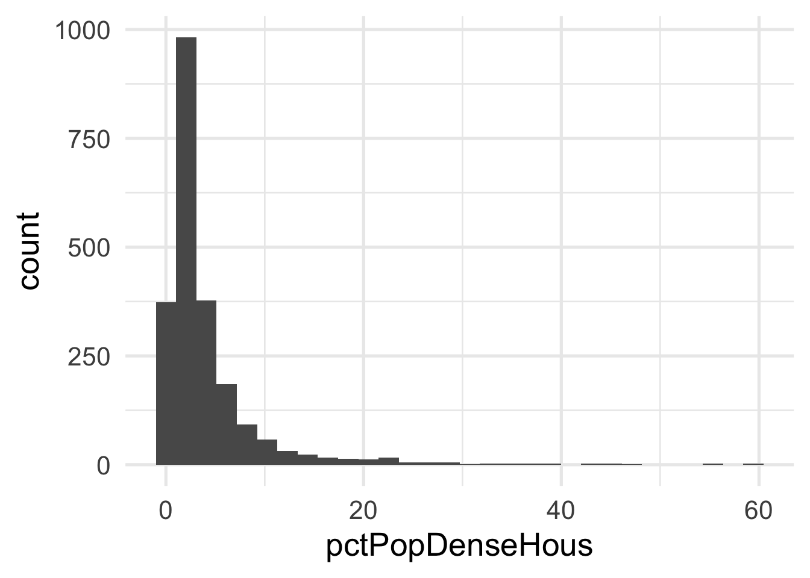
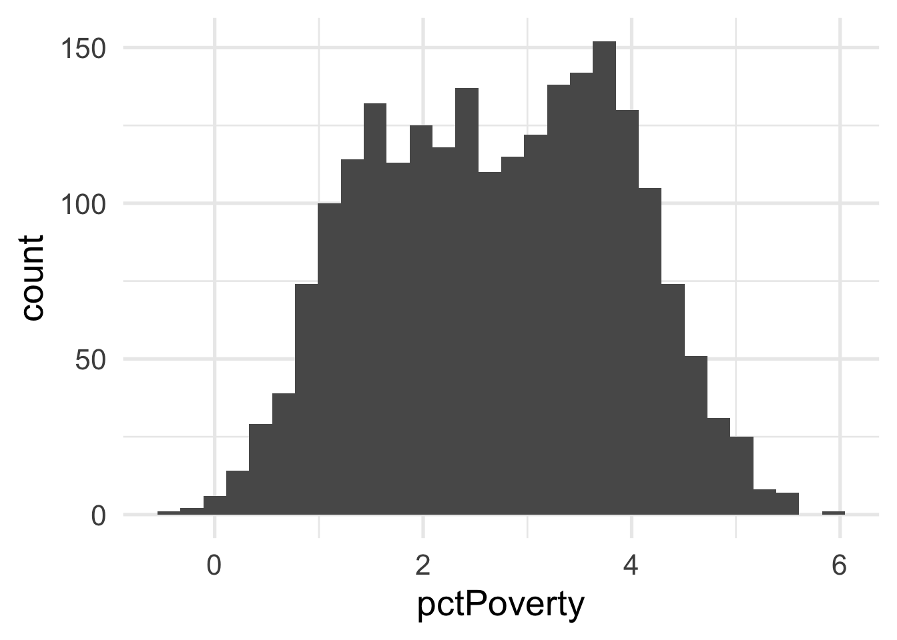
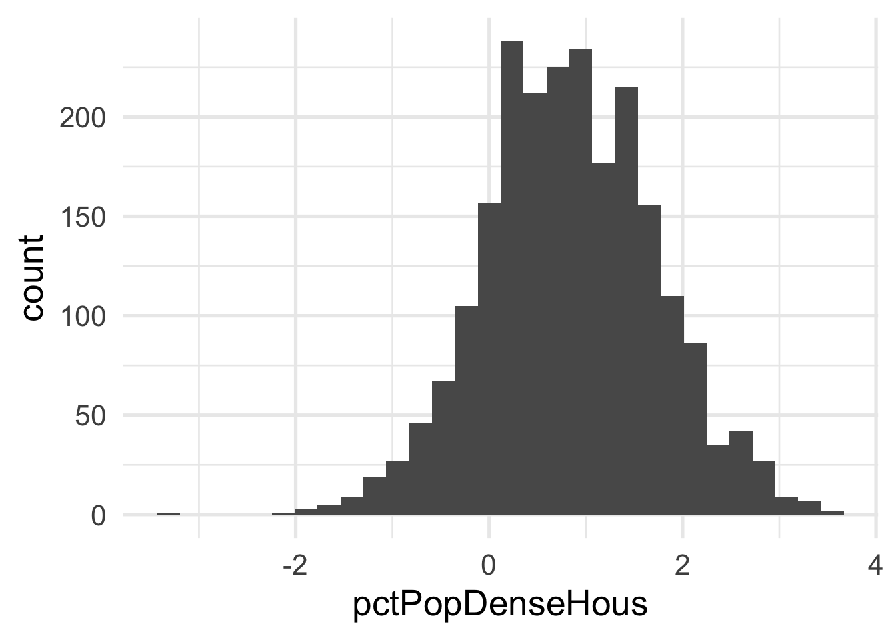
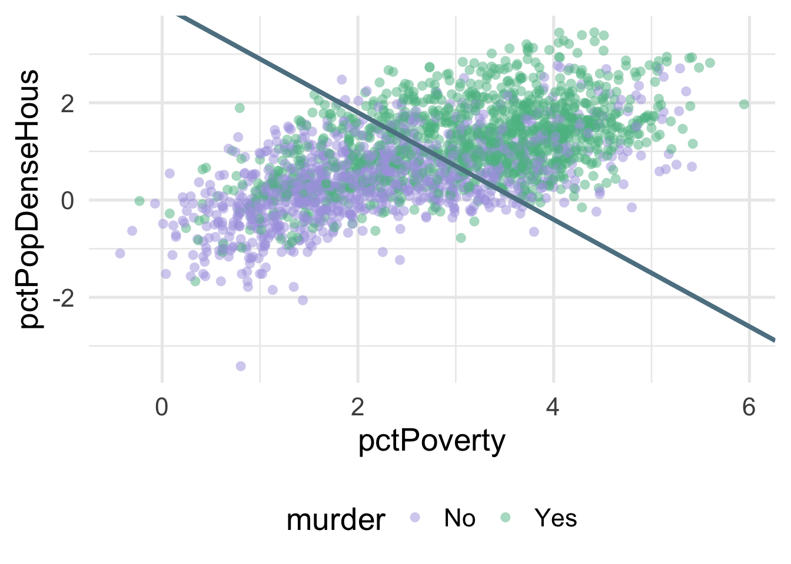

3.6 Transformations
In standard inferential statistics, we are often concerned with the distribution of the outcome. Linear regression, for example, assumes the outcome is at least reasonably normally distributed. If this is not the case, the standard errors (in particular) can be misrepresented. We therefore generally inspect the outcome before modeling it and, if it is not approximately normally distributed, we either transform it to make it more closely approximate a normal distribution, or we use an analysis technique that does not assume normality in the outcome.
In predictive modeling, transformations of the predictors or the outcome(s) (or both) can sometimes help improve model performance. For example, let’s quickly simulate some data.
set.seed(3)
# parameters
alpha <- 10
b1 <- 5
# simulate predictor variable
x <- 1:100
log_x <- log(x)
# residual SD
e <- rnorm(length(x), sd = 0.8)
y <- alpha + b1*log_x + e
sim <- data.frame(x, y)As you can see from the above, we have simulated the data according to \(\log x\), but in our data frame only has \(x\). This is a common situation where we don’t know the true functional form. But of course, if we fit a linear regression model to these data, we’ll end up with high bias, particularly in the lower tail (and issues with heteroscedasticity).

But all we have to do, in this case, is use a log transformation to the \(x\) variable and our linear model fits great.
## x y log_x
## 1 1 9.230453 0.0000000
## 2 2 13.231715 0.6931472
## 3 3 15.700092 1.0986123
## 4 4 16.009766 1.3862944
## 5 5 18.203816 1.6094379
## 6 6 18.982897 1.7917595sim %>%
mutate(log_x = log(x)) %>%
ggplot(aes(log_x, y)) +
geom_point() +
geom_smooth(method = "lm",
se = FALSE)
Note that the model is linear in the transformed units, but curvilinear on the raw scale.
sim %>%
mutate(log_x = log(x)) %>%
ggplot(aes(x, y)) +
geom_point() +
geom_smooth(method = "lm",
se = FALSE,
formula = y ~ log(x))
So in this case, a log transformation to the x variable works perfect (as we would expect, given that we simulated the data to be this way). But how do we know how to transform variables?
3.6.1 Box-Cox and similar transformations
A more general formula for transforming variables is given by the Box-Cox transformation, defined by
\[ \begin{equation} x^* = \begin{cases} \frac{x^\lambda-1}{\lambda}, & \text{if}\ \lambda \neq 0 \\ \log\left(x\right), & \text{if}\ \lambda = 0 \end{cases} \end{equation} \] where \(x\) represents the variable in its raw units, and \(x^*\) represents the transformed variable. The Box-Cox transformation is a power transformation, where the intent is to estimate \(\lambda\). Note that if \(\lambda\) is estimated as zero, the power transformation is the same as a log transformation, otherwise the top portion of the equation is used. Helpfully, specific values of \(\lambda\) map to common transformations.
- \(\lambda = 1\): No transformation
- \(\lambda = 0.5\): square root transformation
- \(\lambda = 0\): log transformation
- \(\lambda = -1\): inverse
Given the above, we would expect that \(\lambda\) would be estimated close to zero with our simulated data. Let’s try using {recipes}. To access the actual \(\lambda\) value, we’ll need to take a brief foray into tidying recipes.
3.6.1.1 Tidying recipes
Let’s first specify the recipe with a Box-Cox transformation to our x variable
Now we can tidy the recipe
## # A tibble: 1 x 6
## number operation type trained skip id
## <int> <chr> <chr> <lgl> <lgl> <chr>
## 1 1 step BoxCox FALSE FALSE BoxCox_dj7WwIn this case, our recipe is incredibly simple. We have one step, which is a Box-Cox transformation. Let’s make the recipe a bit more complicated just for completeness.
rec <- recipe(y ~ x, data = sim) %>%
step_impute_linear(all_predictors()) %>%
step_nzv(all_predictors()) %>%
step_BoxCox(all_numeric(), -all_outcomes()) %>%
step_dummy(all_nominal(), -all_outcomes())Most of these steps won’t do anything in this case, but let’s look at the tidied recipe now.
## # A tibble: 4 x 6
## number operation type trained skip id
## <int> <chr> <chr> <lgl> <lgl> <chr>
## 1 1 step impute_linear FALSE FALSE impute_linear_J8I0L
## 2 2 step nzv FALSE FALSE nzv_8d2bJ
## 3 3 step BoxCox FALSE FALSE BoxCox_NxJt6
## 4 4 step dummy FALSE FALSE dummy_z6mySNow we have four steps. We can look at any one step by declaring the step number. Let’s look at the linear imputation
## # A tibble: 1 x 3
## terms model id
## <chr> <lgl> <chr>
## 1 all_predictors() NA impute_linear_J8I0LNotice there’s nothing there, because at this point the recipe is still just a blueprint. We have to prep the recipe if we want it to actually do any work. Let’s prep the recipe and try again.
## # A tibble: 1 x 3
## terms model id
## <chr> <named list> <chr>
## 1 x <lm> impute_linear_J8I0LAnd now we can see a linear model has been fit. We can even access the model itself.
## $x
##
## Call:
## NULL
##
## Coefficients:
## (Intercept)
## 50.5What we get is actually a list of models, one for each predictor. But in this case there’s only one predictor, so the list is only of length 1.
3.6.1.2 Estimating \(\lambda\)
We can do the same thing to find \(\lambda\) by tidying the Box-Cox step
## # A tibble: 1 x 3
## terms value id
## <chr> <dbl> <chr>
## 1 x 0.7170158 BoxCox_NxJt6And without any further work we can see that we estimated \(\lambda = 0.72\), which is pretty much directly between a square-root transformation and no transformation. Why did it not estimate a \(log\) transformation as most appropriate? Because the log transformation is only ideal when view relative to \(y\). Put differently, the Box-Cox transformation is an unsupervised approach that attempts to make each variable approximate a univariate normal distribution. As we’ll see in the next section, there are other methods that can be used to help with issues of non-linearity.
For completeness, let’s see if the transformation helped us. We’ll use \(\lambda = 0.72\) to manually transform \(x\), then plot the result.
# transform x
sim <- sim %>%
mutate(x_bc = ((x^0.72) - 1) / 0.72)
# fit the model using the transformed data
m <- lm(y ~ x_bc, sim)
# add the model predictions to the data frame
sim <- sim %>%
mutate(pred = predict(m))
# plot the model fit using raw data on the x-axis
ggplot(sim, aes(x, y)) +
geom_point() +
geom_line(aes(y = pred))
As we can see, it’s better than the raw data, but still insufficient.
3.6.2 An applied example
Let’s look at an applied example. We’ll use the violence data (see the full data dictionary here), and see if we can predict the neighborhoods where the number of murders are greater than zero, using the percentage of people living in poverty and the percentage of people living in dense housing units (more than one person per room) as predictors. Let’s start with a basic plot.
violence <- read_csv(here::here("data", "violence.csv"))
violence <- violence %>%
mutate(murder = ifelse(murders > 0, "Yes", "No"))
ggplot(violence, aes(pctPoverty, houseVacant)) +
geom_point(aes(color = murder),
alpha = 0.5,
stroke = 0)
As you can see, it’s pretty difficult to see much separation here. Let’s look at the univariate views of each predictor.


Both predictors are quite skewed. What do they look like after transformation?
murder_rec <- recipe(murder ~ ., violence) %>%
step_BoxCox(all_numeric(), -all_outcomes())
transformed_murder <- murder_rec %>%
prep() %>%
bake(new_data = NULL)
ggplot(transformed_murder, aes(pctPoverty)) +
geom_histogram()

Each of these look considerably better. What about the bivariate view?
ggplot(transformed_murder, aes(pctPoverty, pctPopDenseHous)) +
geom_point(aes(color = murder),
alpha = 0.5,
stroke = 0)
We can much more clearly see the separation here. We could almost draw a diagonal line in the data separating the classes, as below

There’s of course still some misclassification going on here, and that line was drawn by just eye-balling it, but even by hand we can do this much easier after the transformation.
What were the lambda values estimated at for these variables? Let’s check.
## # A tibble: 2 x 3
## terms value id
## <chr> <dbl> <chr>
## 1 pctPoverty 0.1773078 BoxCox_bG8nP
## 2 pctPopDenseHous -0.08555192 BoxCox_bG8nPBoth are fairly close to zero, implying they are similar to log transformations.